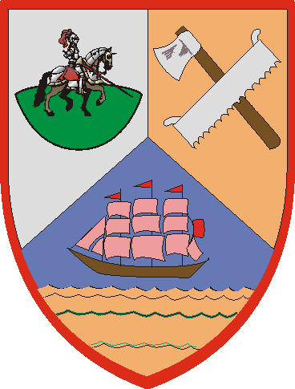

| Übersicht,
Gebäude, Städte und Produktion |
|
Keine Prod nach Charaustausch?!
|
Chashajar Shah
 |
War grade wie immer mit meiner Bauerngruppe beim ernten und hab dann wie immer zum schluss die Laufgruppen wieder getauscht (alle Bauern rein, alle Kämpfer/Magier raus). Dann war auf einmal der Bauernhof auf rot und hat diese Runde nix produziert.
Bei Produktion prüfen bekomm ich folgendes:
Es wurde nichts produziert.
Charakteraustausch
Vorräte ausreichend
Produktion ist aktiv
Was hab ich falsch gemacht? Hatte das noch nie... |
26.02.05 10:09

 |
|
| Viala (RIP) |
wie lange vorher hast du die charaktere getauscht?
in der regel sagt man, eine halbe stunde vor prodrunde sonst kanns auch mal schiefgehn |
26.02.05 10:15
|
|
Chashajar Shah
|
Oh ok. Waren nur 10 Minuten schätz ich. Allerdings ist der BH immernoch auf rot? |
26.02.05 10:19
|
|
Support
 |
Ja bis zur nächsten Produktionsrunde wird er dann rot bleiben. Wenn du jetzt nichts mehr änderst, dann wird er aber produzieren und dann auch wieder grün angezeigt. |
26.02.05 10:25
|
|
Chashajar Shah
|
Oki danke
*erleichtert bin* |
26.02.05 10:33
|
|
| SecSefirot (RIP) |
Du must deine Leute mindestens 20 min vor der nächsten Prodrunde im gebäude haben.
|
27.02.05 22:22
|
|
Übersicht,
Gebäude, Städte und Produktion
|